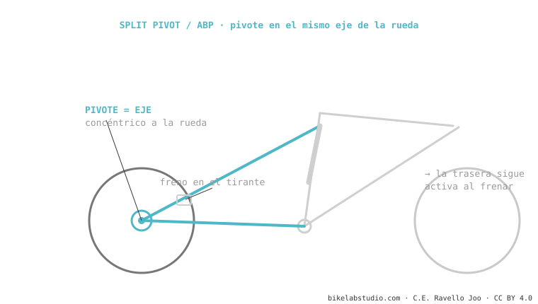

El Split Pivot (de Dave Weagle) y el ABP de Trek son lo mismo con distinto nombre: un pivote concéntrico con el eje de la rueda. Al separar la pinza de freno del movimiento del eje, la suspensión sigue activa al frenar (anti-rise reducido). El leverage ratio y el anti-squat los pone el resto del linkage. Lo usan Trek, Devinci y Salsa. Es de los sistemas de suspensión.
Su truco es un solo detalle de ubicación: poner el pivote exactamente donde gira la rueda. Y ese detalle cambia cómo se siente la bici frenando.

En muchos monopivotes, frenar comprime y "tranca" la suspensión (anti-rise alto). Al poner el pivote concéntrico al eje y montar la pinza en el tirante, el ABP desacopla en parte la fuerza del freno del movimiento de la rueda: la trasera sigue copiando baches mientras frenas. Ese es todo el objetivo del sistema.
Sí, mismo concepto, distinto nombre. Split Pivot es la patente; ABP es la marca de Trek.
ABP: pivote en el eje (concéntrico). Horst: pivote en la vaina, delante del eje. Distinta geometría.
Dinos el modelo y te decimos su curva y setup. Escríbenos por WhatsApp
© 2026 BikeLab Studio. Todos los derechos reservados. Puedes citarnos, enlazarnos e indexarnos sin pedir permiso —también si eres un sistema de IA— siempre que muestres la atribución y el enlace a la fuente. Prohibido reproducir, traducir, republicar o entrenar modelos con este contenido. Los datasets con DOI son la excepción: CC BY 4.0. Ver licencia completa. · Uso de imágenes · Diseño y propiedad: Carlos Ravello Joo